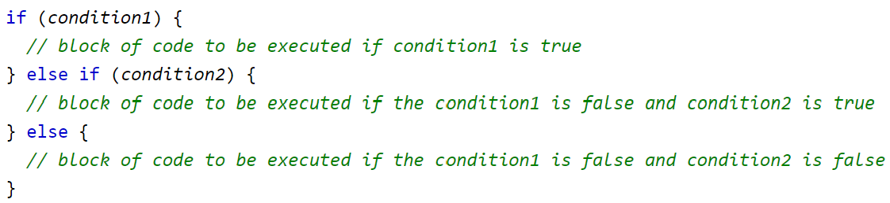

Prework Study Guide

✨ Open the Console to See What's Happening ✨
HTML
- The head element contains information about the webpage (metadata).
- The body element represents the visible content shown to the user.
- Sections can be estbalished with: section
- Classes can be established with: section class="classname" id="idname"
CSS
- 'touch style.css' to create style css file in current directory via command prompt
- Link a CSS text file to the html file by putting in the head: "link rel="stylesheet" href="./assets/style.css"
- The class elements defined in html can be modified with CSS by typing: .'classname' { \property: value \ property: value \}
Git
- git add -A
- git commit -m "comment"
- 'git pull origin main' makes sure our curent branch is up to date before opening a pull request
- git push origin feature/add-html
- go on github and create pull request. Make sure the base branch is main and the comparison branch is feature/add-html
- once merged, type into gitbash: 'git checkout main' to swap back to the main branch.
- Then pull the remote main branch into the local main branch by entering: 'git pull origin main'
Javascript
- 'touch script.js to create new js file'
- variable assignment (includes semicolon): var variablename = "string"/[arrayitem1, arrayitem2];
- console log to output a message to the web console (inspect element), useful for testing code: console.log(topics);
- unlike linking CSS, link the js file at the bottom of the html document between '/footer' and '/body'
- to link the JS file, use: >script< src="./assets/script.js">/script<
- If statements: 
- A value is considered falsy if it is one of the following values: 0, -0, On, "", null, undefined, NaN, or a Boolean data type with the value of false. All other values, including a Boolean with the value of true, are considered truthy
- Threequals ‘===’ is STRICTLY EQUALS
- Javascript is zero-indexed, so the first item in an array is item 0
- select list item using: arrayname[index]; - e.g: cats[1] will return array item 2
- To comment out multiple lines of JavaScript code, put /* before and */ after the block of code